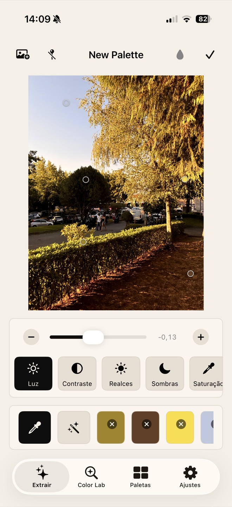
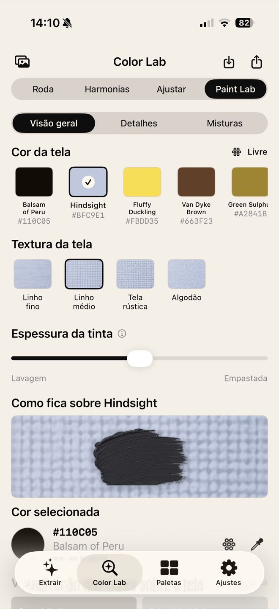

ArtistLab
Submitting to App ReviewTurn a reference photo into a palette you can actually paint from.
Painters work from photographs all the time, and the hard part is not picking colours — it is understanding how they relate. ArtistLab extracts a living palette from any photo, then lets you rebuild it: rotate harmonies, study the distribution on the wheel and preview how a paint really reads over the background you plan to use.
- Colour Lab — colour wheel, harmonies and distribution analysis of your reference
- Paint Lab — paint appearance over a chosen background: opacity, coverage, texture
- Non-destructive by design — one source of truth, so editor, library, preview and export can never disagree
- Local library and export — everything works offline, on device
- ArtistLab Pro — StoreKit 2 subscription with restore, entitlement checks and a free tier that never locks you out of your own work
SwiftUISwiftDataObservation
StoreKit 2PhotosUICore Graphics
Swift TestingiOS 18

Screenshot 1artistlab-1.jpg

Screenshot 2artistlab-2.jpg